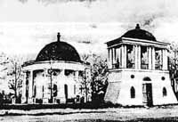

Із попелища ти вставала,
Русь Київська, в усі віки.
Росою рани промивала,
І вічністю пливли роки.
Тут Яготин наш сивочолий,
Повитий славою синів,
Стоїть над берегом Супою,
Як пам’ять прадідів, дідів!
Півострів між Супоєм та Іржавцем на початку ХІV ст. не пустував. То були часи, коли на Україні гарцювали орди кримських татар. По люстрації 1552 року земля над Супоєм належала Канівському замку. Судячи з останніх слів, можна зробити висновок, що з середини XIV ст. постійно перебували тут здобитчики.
Друга половина XVI ст. відзначається тим, що селяни і міська біднота Волині, Поділля, Полісся і Галичини частково переселялись на менш заселені землі. Осідали в Придніпров’ї. Поселенці прийшли на півострів, що омивався двома річками. На великому півострові існувало його відгалуження – малий півострів, який з трьох сторін оточувала вода, а входом до нього служив невеликий перешийок суші, де жили здобитчики. Підварки – місце, де люди жили з найдавніших часів. І нині можна стверджувати, що саме там був започаткований Яготин.
Милує око рідне місто, радіє душа, що живеш тут, і від цього все більше усвідомлюєш, що недаремно відповідно до постанови Кабінету Міністрів України № 878 від 26 липня 2001 року наше місто входить до списку історичних населених місць України (історичне населене місце – згідно з українським законодавством, це місто, селище чи село, яке зберегло повністю або частково свій історичний ареал з об’єктами культурної спадщини і пов’язані з ними розпланування та форму забудови, типові для певних культур або періодів розвитку; на Київщині таких історичних місць 9, а наймолодший серед них Яготин).
Яготин розташувався на сході Київської області серед пшеничних полів, яблуневих садів та посадженого ще за часів Розумовського парку. Блакитна вода Супою у поєднанні з рідкісними екзотичними деревами створюють чарівний куточок української землі. Вона завжди притягувала визначні особистості, надихала на створення літературних та живописних шедеврів українських митців. Перші поселенці тимчасово оселялися в районі Підварок, колись це були межі Київських земель.
Існує багато версій походження назви міста. За однією з легенд ця назва нібито має походження від кримських татар, які були розбиті козаками на Супої в районі міста Яготина. Татарський мурза Яга був узятий в полон і утримувався козаками в укріпленому таборі на півострові, який витягнувся в Супій (тепер Підварки). Звідси і назва “Яго-Тіно” – яга в полоні. За іншою версією назва походить від першого поселенця. Легенда розповідає, ніби-то якийсь Яга, оселившись над Супоєм, обніс свою хату тином.
Друга складова частина назви міста – “тин” – у давньоруській мові означало загорожу, паркан, стіну і обсадні укріплення. А з’являється слово “тин” на території сучасної Європи у ІІ ст. н.е. Тим не менш, вище сказане не доводить, що легенда про “яга” і “тин” справді достовірна. Існувало ще одне давньоруське слово “тіун”, яке, на перший погляд, не має відношення до назви міста. У ХІІІ ст. воно трактувалося як “керуючий, суддя, скарбник князя” або “посадова особа на волоці”. “Волок” пояснюється це так: “заболочена частина шляху між двома, берегами річки, через яку треба перетягувати човен”.
Шлях, який пролягав через Підварки на Київ (і Переяслав) мав перепону саме у вигляді такого “волока” і те, що пізніше саме там виникло поселення, то можливим буде припущення першої назви Яготина – Еготіун, яке з часом набуло теперішнього звучання і правопису. Отже, назва міста все ж таки ймовірніше виникло внаслідок перефразування з “Еготіун” або “Еготін” на “Яготин”.
Володимир Проценко - поет, прозаїк, краєзнавець, заслужений діяч мистецтв України, лауреат премій Івана Багряного, Степана Руданського та «Золоте перо України» пропонує іще одну версію. Згідно люстрації 1552 року землі навколо Супою належали Канівському замку і були ухожені канівськими козаками. В ці місця поширюється територія і більш раннього Черкаського староства. Коли у травні 1596 року через Яготин на Лубни відступало козацько-селянське військо під проводом С. Наливайка, тут і поселилися козаки, заснували хутір, а вже згодом за якихось 20 років розрослося село. Козаки утворили Яготинську сотню, яка належала до перших, “старожитніх” козацьких сотень Переясловського полку, центром якої було село Яготин, колишній волосний центр Переяславського староства Київського воєводства Великого князівства Литовського, Руського та Жемайтійського і навколишні села. Згідно з „Ординацією Війська Запорозького” 1638 року Яготинську сотню з 1616 року очолював сотник Захар Яготинський. Його іменем назване містечко.
На початку XVII ст. Яготин, що був тоді містечком, входив до складу Переяславського староства Київського воєводства Речі Посполитої, його жителі неохоче корилися владі. 1620 року король Сигізмунд III віддав Яготин у довічне володіння волинському воєводі Я. Заславському. В 30-х роках цього ж століття містечко належало князеві Я.Острозькому. Керівник селянсько-козацького повстання Я. Острянин в одному з своїх універсалів згадував яготинців як таких, що зазнавали «утисків і розорень нестерпних» від панів.
З початком визвольної війни 1648—1654 pp. в економічному й політичному становищі Яготина відбулися помітні зміни. Привілеї польських феодалів було скасовані. Яготин став сотенним містом Переяславського козацького полку. В січні 1654 року яготинці неоднозначно прийняли рішення Переяславської ради про возз’єднання України з Росією.
Звільнення від влади польських панів і королівської адміністрації сприяло подальшому розвиткові Яготина. Вже у другій половині XVIІ ст. він був значним містом Лівобережної України з населенням 5 тис. осіб. В 1723 році царські урядовці провели ревізію (перепис) козаків і посполитих містечка. Як свідчать її акти: Яготин був тоді центром козацької сотні, що складалась з 24 сіл. В місті жили міщани, козаки і посполиті. З 59 селянських дворів 22 не малі землі, 15 — коней.
Козацька старшина, спираючись на гетьманський і царський уряди захоплювала все нові й нові землі. В 1757 році імператриця Єлизавета Петрівна подарувала Яготин з навколишніми селами графу К. Г. Розумовському (1728-1803 pp.), генерал-фельдмаршалу, останньому гетьману України (1750—1764 pp.) Яготин з подарованими і купленими гетьманом селами ввійшов до складу 8-го (з 9-ти) округу маєтків К. Г. Розумовського. Селяни відбували дводенну панщину, інші повинності, зокрема підводну. Так, за наказом власника кріпаки за кілька днів розібрали й перевезли на трьох тисячах возів до Яготина його київський палац. Цим самим Розумовський уник тимчасового розташування в своєму палаці військ, які йшли на війну з Туреччиною. 1761 року було закладено велику шовковичну плантацію.

Ось так раніше виглядаля церква перед школою номер 3